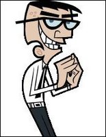
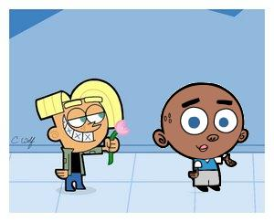
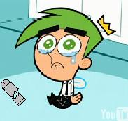

Timmy Turner
 De: La Frikipedia, la enciclopedia extremadamente seria.
De: La Frikipedia, la enciclopedia extremadamente seria.
De la serie grandes personajes:
Pidiendo dinero. Ten cuidado, a pesar de su apariencia puede pedir un deseo y desaparecerte. Cuidado ahi sta!!!!!
| Nacimiento
|
No se sabe, tantos capitulos y nunca crece
|
| Muerte
|
Físicamente imposible
|
| Ocupación
|
Pedir deseos, ke salgan mal y luego solucionarlos
|
| Nacionalidad
|
Dimsdall o como se escriva
|
| Malo o bueno
|
Bueno
|
| Atentados contra la humanidad
|
Casi destruir el mundo numerosamente x causa de sus deseos sexuales
|
| Religión
|
|
| Notas
|
Habla xistoso y tiene una Gorra rosada
|
«Deseo»
~ Timmy Turner Deseando algo
«Deseo Verde, de fresa, serpiente, pastel, papas fritas, chocolate»
~ Timmy Turner Deseando cosas al inicio del programa
«Por que una gorrita rosa? Es niña?»
~ Tu Sobre la gorrita rosa de Timmy
«Si el puede desear al conquistar el mundo, donde queda windows»
~ Bill Gates Sobre windows y la conquista del mundo
«Timmy as mi tarea, lipia el cesped y corta la sala»
~ Vicky Sobre lo que le ordena a timmy
«Yo quiero una gorrita como la de Timmy»
~ Tu De nuevo sobre la gorrita de Timmy
Timmy Turner es un pequeño niño malcriado que se la pasa pidiendo deseos a sus padrinos drogados magicos y jugando con sus amigos Chester y A.J. o molestando a su profeson Crocker ke se emociona y hase movimientos extraños al escuchar algo sobre windows o tu los padrinos magicos, aunque la mayoria del tiempo se la pasa siendo un esclavo niño que cuida bicky su niñera
Biografia
Aunque siempre este del mismo tamaño y parezca que nunca crece tiene 9 años, luego 10 y al final 11, es hijo de Chuck Norris, el señor y la señora turner (si es producto de un trio de chuck norris tambien) cuando se dio cuenta de que nadie lo queria por inutil apareceieron sus padrinos magicos para darle droga hacerlo feliz y aunque se la pasa pidiendo deseos hay veces casi siempre se la pasa haciendo lo que Vicky le ordena, viste siempre igual y tiene una gorrita rosa ya que sus padres todavia piensan que es niña.
La escuela
 El maestro Croker en todo su explendor
espiandote manosea golpea o hasta queve a Trixie y eia no le hace caso por estar con su otros dos amigos mas estupidos que el mismo Timmy, Timmy simpre sta con sus amigos y si alguna ves muere o desaparece hase algo mal sera supantado x el niño del grano viviente, como paso cuando Timmy se drogo y creyo ke se volvio rico
En la escuela tiene a su maestro Croker ke tiene sueños eroticos, y planes para los padrinos magicos pero nadie le cree que existan asi que le hace lavida imposible a Timmy reprovandolo o poniendole malas notas.
Enemigos

Vicky
lastimando cuidando niños
tambien a ti te cuidara- Croker: Cabe destacar que el papa de Timmy
y Tu piensa que Croker es guapo y quiere roberle a su esposa pero a el solo le interesan los padrinos magicos, ya que es magisexual, ya que cuando era un niño mui feo pro cierto tenia padrinos magicos que se le fueron quitados por culpa del de la gorrita rosada y se quedo mas feo aun con con un aparato para busacar seres magicos que decia "LOS PADRINOS MAGICOS EXISTEN" lo que lo hizo volverse loco inicar la busqueda de estos
- Vicky: Su niñera malvada que cuida de el cuando sus padres
se largan a cenar en restaurantes caros tienen ke salir por algun motivo. Vicky se la pasa torturando a los niños que cuida para vivir una vida aburrida sin nada ke aser relajada y divertirse un rato, tiene una hermana que sta obsesionada enamorada de Timmy y tiene una coleccion de el.
- Los pixies: Hadas vestidas de traje que quieren gobernar al mundo Magico y hacerlo aburridoa, tambien quieren gobernar la tierra y de echi lo an echo pro Timmy salvo la Tierra y mundo magico.
Amigos
 Vicky
lastimando cuidando niños
tambien a ti te cuidara - Chester: Niño cuyo padre fue el mejor beisbolista y ahora el pero, asi que tiene ke usar una bolsa en la cabeza, Chester tambien tiene su propia bolsa y tambien fue un gran beisbolista gracias a un deseo
la droga de Timmy y secretamente esta enamorado de A.j
- A.J.: Es el tipico niño genio que lo sabe todo y sus padres no se dan cuenta
de ke se droga esta enamorado de Chester y siempre esta con Timmy, es calvo y tiene clones de el mismo en su habitacion
- Los padrinos magicos: Todos los padrinos magicos son amigos de timmy y lo conocen y saben que el casi destruye la tierra y la salva
y ke les roba a sus mujeres y niñas pero de todos modos lo quieren
 Cosmo triste por que este articulo le faltan cosas
Sabias que....?
- ... Timmy desea cosas?
- ... No puede desear amor?
- ... Tu tampoco?
- ... Timmy deseo un control remoto?
- ... Timmy tiene sexo con Adam West?.
- ... Timmy tiene sexo (y Trío con West) con Barbilla Roja?.
Autor(es):
- Geruv
- Genericool
- Dancob
- Volver al futuro 2
- Mariloops12
- Coyote Firefoxero
- NitroMynd!
- XJohnnyx
Frikipedia 2005-2016, Licencia
GFDL 1.2 - Extraído por FrikiLeaks